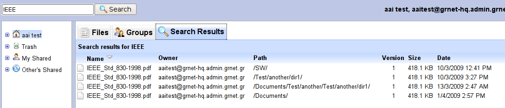

Αναζήτηση
Το σύστημα υποστηρίζει αναζήτηση πλήρους κειμένου (full text search & indexing). Η αναζήτηση με βάση λέξεις κλειδιά / φράσεις που δίνει ο χρήστης, πραγματοποιείται στα ονόματα των αρχείων, τα tags αλλά και στο περιεχόμενο τους: υποστηρίζονται αρχεία PDF (unencrypted), .doc, .xls, .ppt, .txt και .html. Στην παρούσα φάση αρχεία μεγαλύτερα από 30ΜΒ εξαιρούνται από το indexing των περιεχομένων. Το index ενημερώνεται αυτόματα, χωρίς ενέργεια του χρήστη, σε κάθε προσθήκη-διαγραφή-ενημέρωση του αρχείου (για αρχεία με ενεργοποιημένο το versioning το index λαμβάνει υπόψη μόνο την τελευταία έκδοση). Τέλος, η λειτουργία αναζήτησης λαμβάνει υπόψη τα δικαιώματα πρόσβασης του χρήστη που τη χρησιμοποιεί - έτσι ο χρήστης βλέπει αποτελέσματα μόνο από αρχεία στα οποία έχει πρόσβαση (δικά του ή αρχεία άλλων χρηστών που του έχει δοθεί πρόσβαση).
Η αναζήτηση πραγματοποιείται μέσω του πεδίου αναζήτησης που βρίσκεται στο πάνω μέρος της οθόνης, κάτω από το μενού επιλογών:

Έτσι, συμπληρώνοντας το πεδίο αναζήτησης και πατώντας ENTER ή κάνοντας left mouse click στο "Search", το σύστημα εκτελεί την αναζήτηση και εμφανίζει στο tab "Search Results" λίστα των αρχείων που περιέχουν τις λέξεις κλειδιά και στα οποία ο χρήστης έχει δικαίωμα πρόσβασης. Η λίστα αυτή συμπεριφέρεται όπως και η λίστα περιεχομένων καταλόγου.
Η παρακάτω εικόνα παρουσιάζει ένα τέτοιο παράδειγμα:
|

Αποτελέσματα αναζήτησης |
Η σύνταξη του κειμένου αναζήτησης ακολουθεί τους εξής κανόνες:
- Λέξεις διαχωρισμένες με κενά υποννούν λογικό "ΚΑΙ" ανάμεσα τους - δηλαδή, αναζήτηση αρχείων που περιέχουν όλες τις λέξεις κλειδιά
- Η χρήση του τελεστή - μπροστά από μια λέξη υποννοεί λογικό "ΟΧΙ" - δηλαδή, τα αρχεία δεν πρέπει να περιέχουν τη λέξη κλειδί
- Φράση μέσα σε "" αναζητάται ακριβώς όπως γράφεται και όχι ως επιμέρους λέξεις κλειδιά